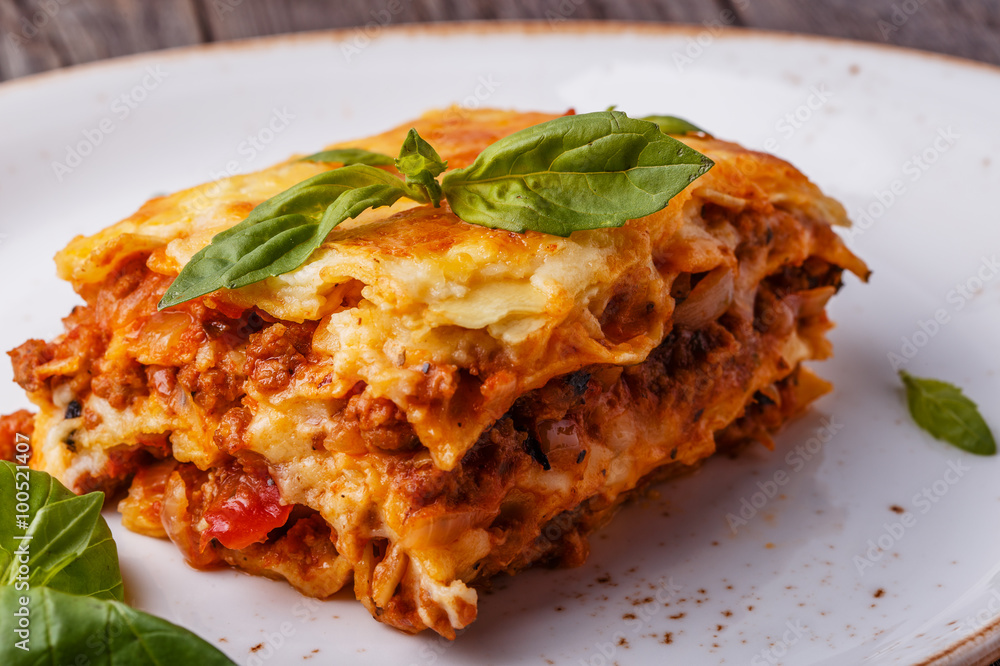

Lasagna

Description
A Italian dish featuring layers of pasta, rich meat sauce, creamy béchamel, and melted cheese—perfect for family dinners or gatherings.
Ingredients
- 9 sheets Lasagna noodles
- 500g Ground beef
- 1 medium Onion (chopped)
- 700 ml Garlic (minced)
- 500 ml Tomato sauce
- 200g (grated) Béchamel sauce
- 50g (grated) Mozzarella cheese
- 2 cloves Parmesan cheese
- 2 tbsp Olive oil
- To taste Salt & pepper
Steps
- Prepare Meat Sauce: Sauté onion and garlic in olive oil. Add ground beef, cook until browned. Add tomato sauce, salt, and pepper. Simmer for 15 minutes.
- Cook Noodles: Boil lasagna noodles as per package instructions. Drain and set aside.
- Layer Lasagna: In a baking dish, spread a thin layer of meat sauce. Add a layer of noodles, then more sauce, béchamel, and mozzarella. Repeat layers, finishing with sauce, béchamel, and both cheeses on top.
- Bake: Preheat oven to 180°C. Bake for 30–35 minutes until golden and bubbling.
- Rest & Serve: Let lasagna rest for 10 minutes before slicing. Serve warm.
Homepage